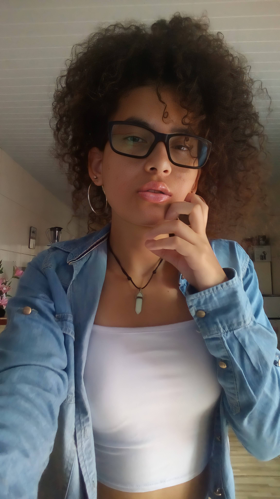

Verônica Gonçalves
Desenvolvedora Frontend Júnior


Sobre
Ola 😊 Como você já sabe me chamo Verônica, seja bem-vindo(a) ao meu mini-portifolio!
Sou uma pessoa apaixonada pela programação desde que eu tinha meus 17
anos.
Sempre tive o sonho de trabalhar nesta área e
atualmente comecei a trilhar meu caminho na pratica estudando
HTML, CSS e JavaScript, para fazer deste sonho algo real.
Sou uma pessoa bem serena, porém, com foco absoluto no que eu quero. Tenho como hobbies os jogos
RPG, assistir séries e animes.
No canto superior onde tem um coração estão redes sociais, caso você queira saber um pouquinho mais sobre mim.